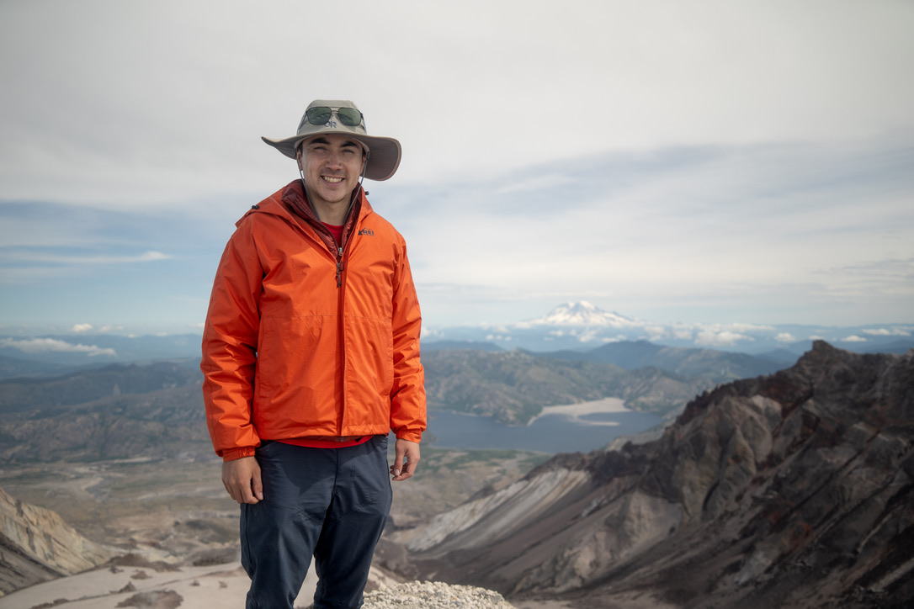

I'm James, I'm in my 5th year at UCSB and I finished my undergrad in June. Since joining UCSB, I've fallen in love with the outdoors through triathlon. This summer I was up in Seattle and backpacked 2 of the PNW volcanoes: Mount St. Helens and Mount Adams. While backpacking, I like to bring along my camera. When I'm not spending my free time in the outdoors, I like to play board games with my friends. Here's a photo of my trip from St. Helens!
